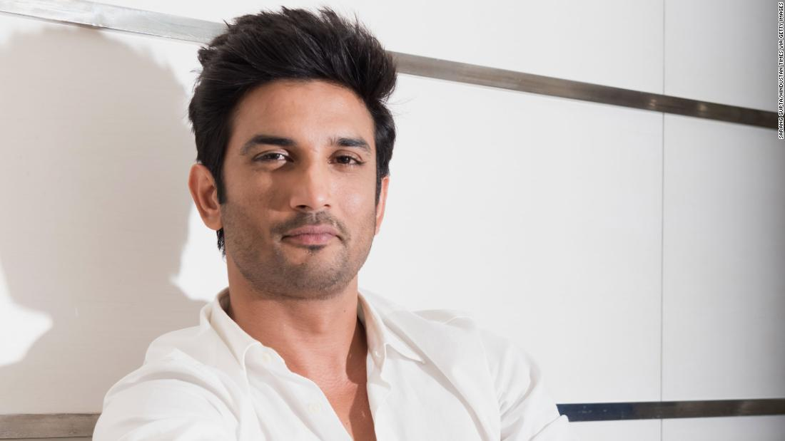
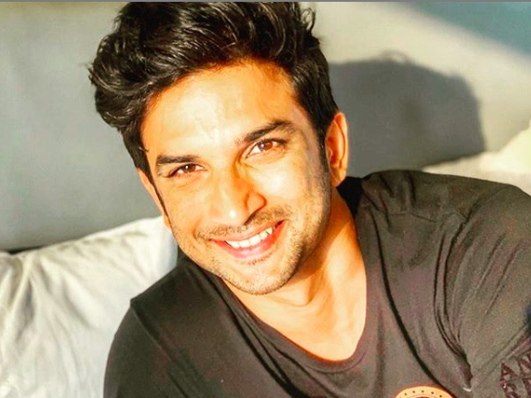
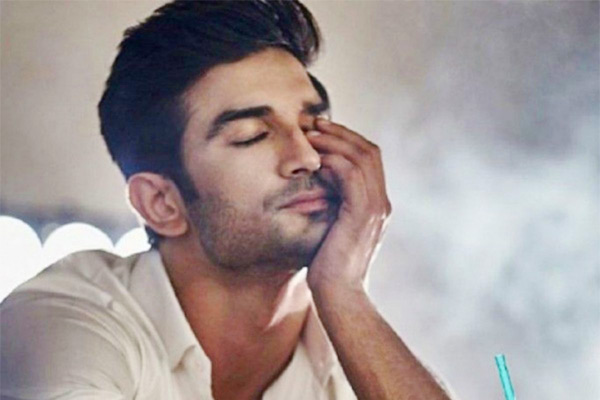

(21 January 1986 – 14 June 2020)
 Sushant Singh Rajput was an Indian actor. Rajput started his career with television serials. And then he continued with film debut . NITI Aayog, the policy think-tank of the Indian government, signed him to promote the Women Entrepreneurship Platform (WEP). Apart from acting and running Innsaei Ventures, Rajput was actively involved in various programmes like Sushant4Education, as a part of efforts to help young students. Rajput died by suicide at his home in Bandra, Mumbai in June 2020, at age 34.
- Early life and background
- Career
- Personal life and Death
- Films
- Television
- Music Vedios
- Awards and Nominations
If you have time, you should read more about this incredible human being on his Wikipedia entry